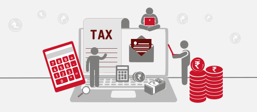

Racism
When people think that one color is better than another, and they treat or mistreat people based on that belief. So we need to stop racism.This first step to ending racism is to recognize its existence. Many people think of racism as always overtly blatant or intentional, but racism comes in many forms. In the United States, studies there’s bias in every sector of society from healthcare to housing to media. Job applicants with “stereotypical” African-American names are less likely to get called for an interview, while around the world, the beauty industry celebrates fair skin while degrading dark skin tones.
Gender Equality
Gender Equality means that women and men have equal conditions for realizing their full human rights and for contributing to, and benefiting from, economic, social, cultural and political development.Like, its not like only men should work even women can work. Men can also do chores in home, its not like only womens should do the chores.

Religious Equality
Religious equality means treating all religions the same: Christians, Sikhs, Hindus, Buddhists Muslims and Jews, as well as all denominations within each of them. However, religious establishment (a term that may well be essentially contestable in British constitutional law) necessarily carries privileges with it that cannot be afforded uniformly. These principles came into direct conflict in a recent debate in the House of Lords.
Taxes
We need to reduce taxes for lower class people because they get less salary, we can increase some tax for higher class people.
